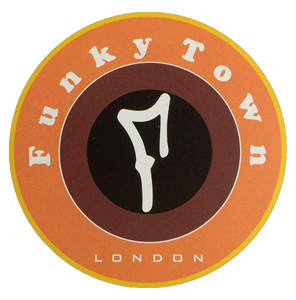

Trade Mark Journal No.2025/013 28 March 2025
UK00004170824 8 March 2025 (25,30,35)

- Class 25
- Clothes; Clothing; Swaddling clothes; Baby clothes; Beach clothes; Nappy pants [clothing]; Denims [clothing]; Jackets [clothing]; Work clothes; Shorts [clothing]; Drawers [clothing]; Drawers as clothing; Aprons [clothing]; Clothes for sports; Jackets (Stuff -) [clothing]; Stuff jackets [clothing]; Clothes for sport; Linen clothing; Headbands [clothing]; Headbands for clothing; Kerchiefs [clothing]; Bottoms [clothing]; Gloves [clothing]; Gloves as clothing; Capes (clothing); Furs [clothing]; Trunks being clothing; Maternity clothing; Babies' pants [clothing]; Jerseys [clothing]; Layettes [clothing]; Clothing layettes; Woolen clothing; Oilskins [clothing]; Hoods [clothing]; Clothing for leisure wear; Ready-to-wear clothing; Garments for protecting clothing; Clothing for babies; Gabardines [clothing]; Bodies [clothing]; Belts [clothing]; Belts for clothing; Tops [clothing]; Gussets for underwear [parts of clothing]; Playsuits [clothing]; Pockets for clothing; Collars [clothing]; Veils [clothing]; Knitwear [clothing]; Corsets [clothing, foundation garments]; Paper hats for use as clothing items; Silk clothing; Fabric belts [clothing]; Mitts [clothing]; Beach clothing; Hats (Paper -) [clothing]; Paper hats [clothing]; Belts (Money -) [clothing]; Money belts [clothing]; Braces for clothing; Chaps (clothing); Ready-made clothing; Gussets for bathing suits [parts of clothing]; Embroidered clothing; Casual clothing; Knitted clothing.
- Class 30
- Tea; Oolong tea [Chinese tea]; Oolong tea; Rooibos tea; Chai tea; Iced tea; Tea (Iced -); Chamomile tea; Tieguanyin tea; Darjeeling tea; Herbal tea; Black tea [English tea]; Peppermint tea; Ginseng tea; Ginger tea; Jasmine tea; Tea cakes; Tea beverages; Green tea; Tea for infusions; Tea bags for making non-medicated tea; Instant Oolong tea; Tea bags; Rosemary tea; Barley tea; Buckwheat tea; Fermented tea; Tea leaves; Tea extracts; Citron tea; Flavourings of tea; Kelp tea; Tea beverages with milk; Sage tea; Lapsang souchong tea; Lime tea; Tea pods; Black tea; White tea; Teas; Iced tea (Non-medicated -); Tea essences; Linden tea; Iced teas; Herb tea [infusions]; Yellow tea; Mate [tea]; Beverages with tea base; Beverages with a tea base; Red ginseng tea; Barley-leaf tea; Instant tea; Tea substitutes; Tea mixtures; Ginseng tea [insamcha]; Tea (Non-medicated -); Artificial tea; Herbal tea [other than for medicinal use]; Beverages made of tea; Instant green tea; Japanese green tea; Non-medicinal herbal tea; Theine-free tea; Herbal teas; Tisanes made of tea (Non-medicated -); Iced tea mix powders; Tea beverages (Non-medicated -); Chrysanthemum tea (Gukhwacha); Packaged tea [other than for medicinal use]; Apple flavoured tea [other than for medicinal use]; Roasted barley tea [mugicha]; Iced coffee; Fruit flavoured tea [other than medicinal]; Tea bags (Non-medicated -); Jasmine tea bags, other than for medicinal purposes; Roasted barley tea; Lime blossom tea; Instant white tea; Orange flavoured tea [other than for medicinal use]; Instant black tea; Fruit teas; Coffee; Artificial tea [other than for medicinal use]; Jasmine tea, other than for medicinal purposes; Tea extracts (Non-medicated -); Rose hip tea; Decaffeinated coffee; Mugi-cha [roasted barley tea]; Yuja-cha (Korean honey citron tea); Flavourings of tea for food or beverages; Coffee, teas and cocoa and substitutes therefor; Herbal teas [infusions]; Caffeine-free coffee; Earl grey tea; Earl Grey tea; Tea essences (Non-medicated -); Roasted brown rice tea; Theine-free tea sweetened with sweeteners.
- Class 35
- Retail services connected with the sale of clothing and clothing accessories; Wholesale services in relation to teas; Wholesale services in relation to coffee; Wholesale services in relation to cups and glasses; Wholesale services in relation to chocolate; Wholesale services relating to cups and glasses; Wholesale services in relation to cocoa; Wholesale services in relation to bags; Wholesale services in relation to confectionery; Wholesale services in relation to stationery supplies; Wholesale services in relation to clothing; Wholesale services relating to clothing; Mail order retail services for clothing accessories; Retail services in relation to clothing accessories; Mail order retail services connected with clothing accessories; Wholesale services in relation to fabrics; Wholesale services relating to jewelry; Wholesale services in relation to jewellery; Mail order retail services for clothing; Wholesale services relating to furniture; Wholesale services relating to furs; Online retail store services in relation to clothing; Retail services in relation to clothing; Online retail store services relating to clothing.
Funky-Retro Ltd